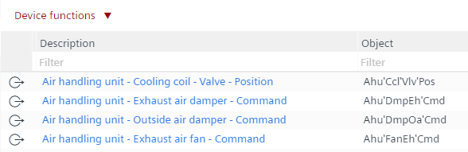

BACnet objects
The BACnet objects task allows to edit all engineered BACnet objects of the entire automation station.
Standard view | Reworked view |
|---|---|
|  |

1 | Task selector | 2 | Plants navigation view |
3 | Toolbar | 4 | Device functions and filters |
5 | Object list | 6 | Properties |
① Task selector
Task | Description |
|---|---|
Applications | |
I/O configuration | |
Modbus | |
M-bus | |
KNX PL-Link | |
BACnet references | |
BACnet objects | |
Programming | |
Device assignment |
② Plants navigation view
The Plants navigation view shows the plant hierarchy of the devices, and the Special objects shows the list of alarmable objects.
Command | Description |
|---|---|
| Expands/collapses the folder structure. |
Filter | Sorts and displays results as per field entry. |
③ Toolbar
Command | Description |
|---|---|
|
State | Indicates the state of the application. The green color indicates that the application is online and running or paused.
|
Check | Checks for duplicate names, number of I/Os, trend limits, etc. The check is automatically performed before loading a device. |
(Play) | Only visible when the device is online. Activates an online session and loads changes for the selected device. |
(Pause) | Only visible when the device is online, and an online session is started. Deactivates an active online session. |
| Removes the splitting from the screens. |
| Splits the screen vertically. |
| Splits the screen horizontally. |
④ Device functions and filters
Command | Description | |
|---|---|---|
Device functions |
Set hierarchical descriptions | Creates the entire hierarchical description of these data points according to the object name structure. For example, Ahu'FanEh'Cmd to Air handling unit - Exhaust air fan - Command. INFO: The used separator can be changed in the project settings: select the menu Settings, the task selector Naming defaults, the Naming rules tab and the Separator for hierarchical description text field. To undo all changes, select the |
Set default descriptions | The description of an object is derived from its part name. If the part name is not picked from the text catalog, the description cannot be updated. To undo all changes, select the | |
Synchronize trend descriptions and names | Extend name and description of trend objects with name and description of the trended objects. To undo all changes, the | |
Predefined filters | Use the predefined filters I/Os, Network peripheral device points and BACnet references to limit the view to the objects. Additionally, the column filters can also be applied. | |
Additional properties | Options to enable more properties in the table. | |
 Undo command in the Component selector.
Undo command in the Component selector.
⑤ Table view of the BACnet objects for Plants and Special objects
The objects can be sorted by selecting a column. By entering a filter below the column title, the view of the objects can be restricted. Note: When the function Set hierarchical descriptions is performed, it affects all objects.
Note: The Additional properties functionality in the Plants view can be shown as columns in the table view.
Column header | Description |
|---|---|
|
Description | Describes the name of the object. |
Object name | Shows the entire path of the technical designation, for example, Ahu'FanEh'Cmd. |
Type | Shows the object type, for example, AO = Analog output. |
Parent | Shows the parent name of the object. |
Name | Shows the last part of the technical designation. |
Extension | Extension of the Name. |
(Alarming) | Enables intrinsic alarming for the BACnet object. Select True to filter for objects with activated alarming function. |
(Trending) | Creates trend for the selected BACnet object. Select True to filter for objects with activated trending function. |
Notification class | Displays the alarm-generating objects. |
⑥ Properties
The Properties view shows the properties of the selected element. The items displayed in the Property view depend on the selected object type. By selecting Compact view or BACnet view, the number of properties displayed is limited or expanded. If necessary, the individual properties can be changed within the selected view. If required:
- A corresponding alarm can be defined in the Alarm tab.
- A Trend log object can be created in the Trend tab.
Further information
- Assigning hierarchical descriptions for BACnet objects
- Set default descriptions
- Sync BACnet trend log description and name with trended BACnet objects
- Mass operation of properties
- Mass operation of notification classes
- Enabling an alarm on a BACnet property
- Using the new notification class for the alarm
- Creating a trendlog object
- Creating an alarm on a BACnet object
- Setting filters for BACnet objects
- Configuring list of object property references within a scheduler object
- Additional properties